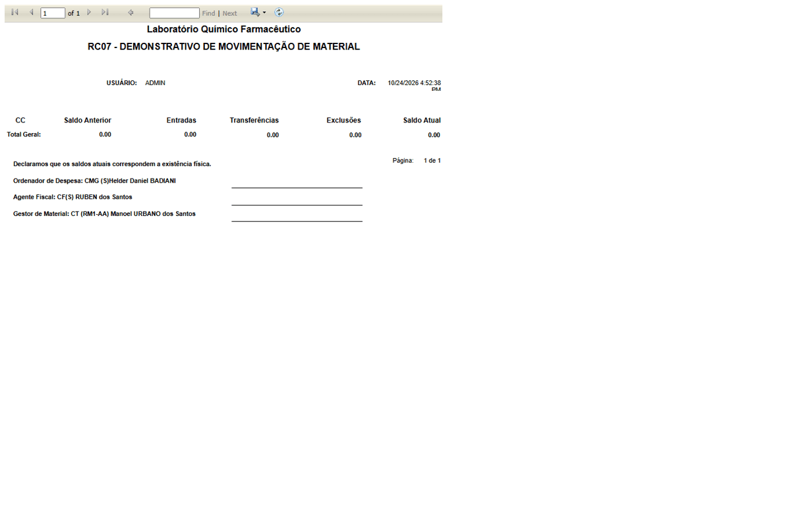
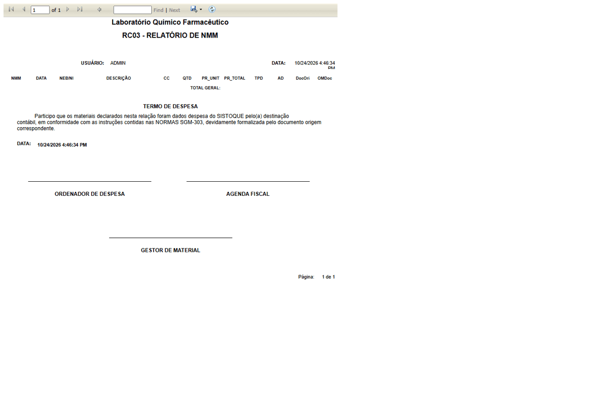
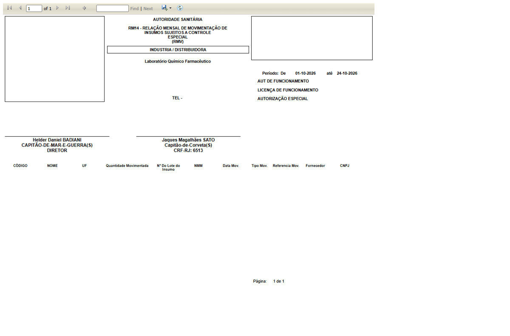

DV-EST-129 · Relatórios de movimentação (RC07, RC03, RM14, RM03) trazem texto, declaração e assinaturas fixas de outra organização, e o RC07 declara "existência física" com todos os valores zerados
O **RC07** da data de hoje sai com todas as colunas em 0,00 e, mesmo assim, imprime "Declaramos que os saldos atuais correspondem a existência física" e três assinaturas fixas (Ordenador de Despesa, Agente Fiscal e Gestor de Material, com nomes e postos de outra organização). O **RC03** traz "Termo de despesa", "SISTOQUE" e "NORMAS SGM-303". O **RM14** traz diretor e farmacêutico com inscrição profissional fixos e deixa endereço, telefone e autorizações em branco, e o **RM03** também deixa em branco endereço, telefone e autorização. Em um relatório sanitário isso é uma declaração e uma assinatura que a empresa não fez.
Como reproduzir o erro, passo a passo
- Gerar o RC07 (data de hoje), o RC03 (entrada por nota fiscal, outubro/2026), o RM14 e o RM03 (01 a 24/10/2026) e ler o cabeçalho e o rodapé.
Esperado
Dados e assinaturas da própria empresa, ou campo em branco para assinar; nenhuma declaração com valores zerados.
Obtido
Texto, normas e assinaturas de outra organização, declaração de existência física com zero.
Evidência (captura da tela)


